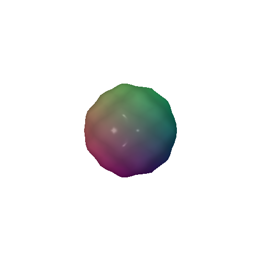

3. Re-texturing a mesh
color1 = [1, 0, 0] and color2 = [0, 0, 1]
4. Camera Transformations
Camera transformation parameters:
# 1
R = R_relative @ torch.tensor([[0, 1.0, 0], [-1.0, 0, 0], [0, 0, 1]])
# 2
T_relative=torch.tensor([0, 0, 2])
# 3
T_relative=torch.tensor([0.5, -0.5, 0])
# 4
R = R_relative @ torch.tensor([[0, 0, -1.0], [0, 1, 0], [-1, 0, 0]])
6. Do Something Fun
Displacement mapping (bump effect)
In this implementation, I created an interesting visual effect using vertex color mapping and displacement mapping on a sphere mesh.
- First, I generated a sphere using PyTorch3D's ico_sphere with subdivision level 3.
- For the vertex colors, I created a gradient effect by mapping the x-coordinates to red channel, y-coordinates to green channel, and setting a constant blue value of 0.5. This creates the smooth color transition you can see in the original mesh.
- Then, I implemented a displacement effect using a sinusoidal function that creates a wavy pattern on the surface. The displacement is calculated using the formula: sin(x*10) * cos(y*10) * strength, where strength is set to 0.1. This creates the bumpy, wave-like pattern visible in the displaced mesh.
Original:
Displacement mapping:
